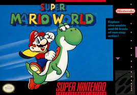
In Super Mario World for the SNES, you're Mario (or Luigi!) on a mission to save Princess Peach from Bowser.
You're hopping and bopping across the Dinosaur Land, tackling cool levels with all sorts of challenges.
You've got to dodge enemies, smash blocks, and collect power-ups like the Super Mushroom and the awesome Cape Feather.
Plus, you meet Yoshi, a dino buddy who helps you chomp enemies and reach new heights. You're uncovering secret paths, taking on Bowser's minions,
and racing through castles to face off against Bowser himself. It's a classic Mario adventure with tons of fun and surprises at every turn!
Some CharactersMario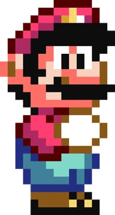 Luigi 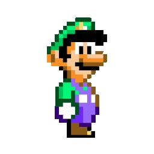 Yoshi 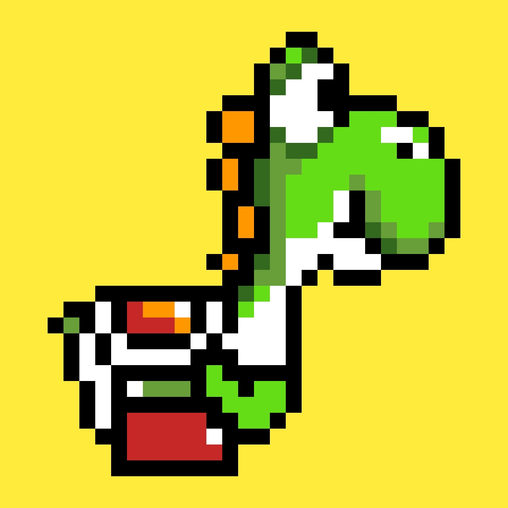 |
Some BossesIggy Koopa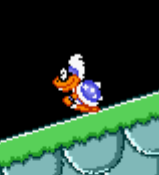 Roy Koopa 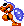 Bowser 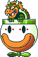 |
Some Pick-upsSuper Mushroom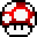 Yo, snag a Super Mushroom and Mario bulks up to Super Mario, where he's all big and can rock Fire Flowers and Cape Feathers. He can even bust Rotating Blocks with a rad spin jump. Plus, Super Mario can take a hit without biting the dust – he just goes back to being regular Mario instead of losing a life. Totally boss! Cape Feather 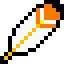 Grab a Cape Feather and boom, Mario turns into Caped Mario, rocking a sweet yellow cape. This gear lets him soar high once he gets enough speed. It's like, totally fly! Super Star Snag a Starman and Mario goes full-on invincible mode, blasting through enemies like nothing. He's still gotta watch out for falls, the clock, or getting squished. Each baddie he knocks out ramps up points big time, and after the seventh, it's raining extra lives. It's a wicked fast way to stack up those 1-Ups! |
| 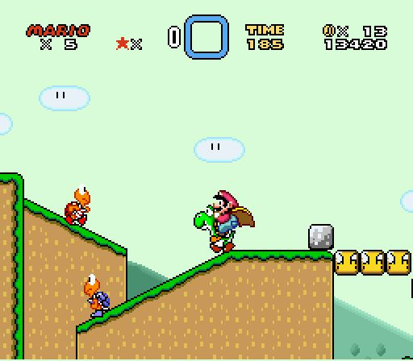 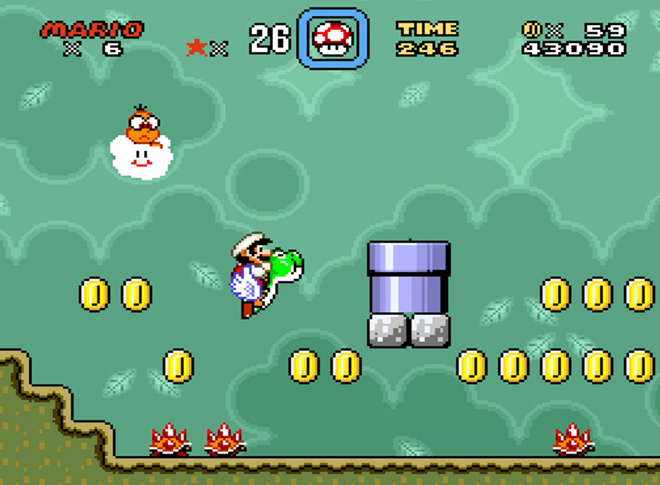 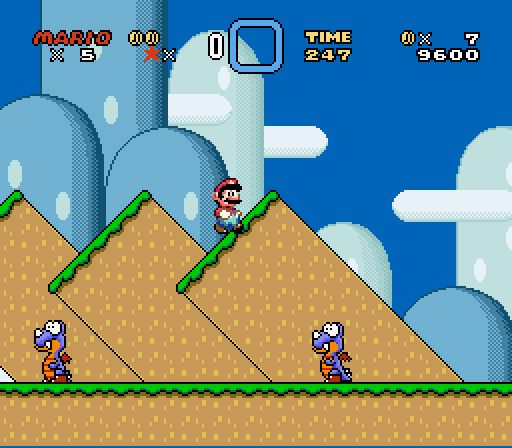 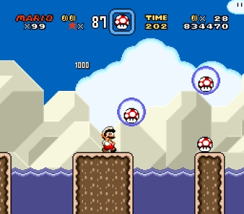 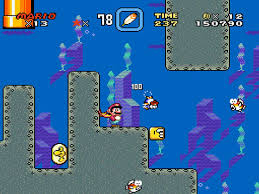 |